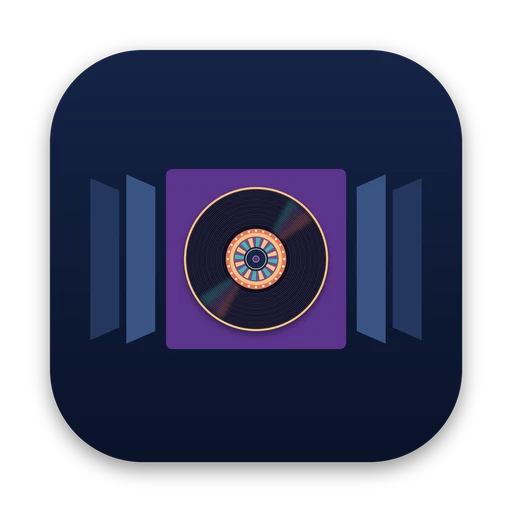

Three ways to browse
The 3D Cover Flow, a grid, and Album View: a player window that scales from a compact mini-player to an almost full-screen cover.

Cover FlowRecord-collection player · a dustalexw app
Browse your music by its covers.
3D Cover Flow, a grid, and Album View, from mini-player to full screen. With gapless playback, lyrics, karaoke and a visualizer.
Apple silicon and Intel · iPad and iPhone
Version 1.8.2
Cover Flow for Mac downloads on a Mac. There are iPad and iPhone versions too, built with Xcode: see iPad and iPhone.
Drag, swipe, click a cover or use ← →, just like the app. These albums are made up.
Cover Flow is a native SwiftUI and AVFoundation app that plays your files where they are, or keeps them organized for you. Here's what's inside.
The 3D Cover Flow, a grid, and Album View: a player window that scales from a compact mini-player to an almost full-screen cover.
MP3, AAC, ALAC, FLAC, WAV and AIFF, plus Opus, Ogg Vorbis, Monkey's Audio, WavPack, DSD, Musepack, WMA and more, all played without gaps.
Remove the vocals, hear only the vocals, or isolate drums, bass, guitar and piano with Demucs. Mix the stems yourself and export them as WAV.
Synced lyrics that follow the music, found on LRCLIB. Missing covers come from MusicBrainz and the Cover Art Archive. No API keys needed.
Four native Metal styles, Pulse, Aurora, Spectrum and Nebula, at up to 60 fps, or bring your own MilkDrop presets.
In immersive Album View the artwork extends across the screen in its own colors, with optional on-device Stable Diffusion refinement.
Early-iTunes style: Helvetica, compact song columns and a big cover, colored to match each album's artwork.
Now Playing and scrobbles from real listening time, cached during outages. Your password never touches the app.
Optionally copy or move imports into Artist/Album/01 Title folders, on your Mac or an external drive.
One universal app for Apple silicon and Intel Macs running macOS 14 or later.
Needs macOS 14 and Xcode (or the Command Line Tools). The first build downloads verified TagLib, projectM and FFmpeg sources and the scene model; later builds reuse them. No Homebrew needed.
git clone https://github.com/dustalexw/cover-flow cd cover-flow ./build.command # builds, signs and opens Cover Flow.app COVERFLOW_SKIP_SD=1 ./build.command # skip the 1.6 GB scene model
macOS